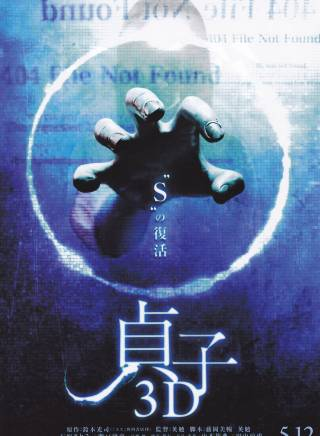

她是美丽惹人喜爱的女神，也始终是把握自己人生航向的大女主， 那么多风浪她都过来了，她选定的婚姻，也必然考虑成熟后的选择，未来无论如何，她一样能为自己的人生兜底。那么，宅男们，就请从此忘掉你的“十元老婆“，接下来的人生，交给石原里美自己吧。...详情
相关新闻
内容来自
基本信息
石原里美，1986年12月24日出生于日本东京，日本女演员、主持人。
2002年，参加HORIPRO公司第27回艺人新人选拔，获得最佳新人“完美少女”奖
[1]
，从而正式以女演员的身份进入演艺圈。2003年，参演喜剧电影《我的爷爷》，她则凭借该片获得了第28届报知映画赏新人赏、第27届日本电影学院赏新人赏等7个电影奖项的新人赏
[2-3]
。2004年，在青春校园剧《H2》中饰演古贺春华
[4]
。2005年，主演的爱情剧《赤的疑惑》播出
[5]
。2007年，主演喜剧电影《绷带俱乐部》
[6]
。2008年，主演的喜剧电影《飞行兔子》上映
[7]
。2010年，主演的悬疑喜剧《灵能力者小田雾响子的谎言》播出
[8]
。
2011年，主演的爱情剧《他是妹妹的恋人》首播
[9]
。2012年，在恐怖电影《贞子3D》中饰演鲇川茜
[10]
。2013年12月，主演的爱情剧《恋》播出
[11]
。2014年，主演的爱情剧《Dear Sister》播出
[12]
。2015年，主演爱情剧《朝5晚9~帅气和尚爱上我~》
[13]
。2016年，出演的科幻灾难电影《新·哥斯拉》上映
[14]
。2017年，担任综艺节目《24小时TV》的慈善主持人
[15]
。2018年，主演医疗悬疑剧《非自然死亡》
[16]
，凭借该剧获得第96届日剧学院赏最佳女主角
[17]
。2019年，主演喜剧《天国餐馆》
[18]
。2020年，主演医疗剧《默默奉献的灰姑娘药师》
[19]
。
石原里美演艺经历
编辑
早期图片(10张)
2003年2月15日，参演的爱情电影《小岛之恋》上映；4月5日，参演的喜剧电影《我的爷爷》上映，在片中饰演五代家的独生女五代珠子，她则凭借该片获得了第27届日本电影学院赏新人赏、第28届报知映画赏新人赏等7个电影奖项的新人赏
[2-3]
；4月16日，参演的爱情剧《宠物情人》播出；9月29日，出演的家庭剧《开朗家族》播出，在剧中饰演活泼开朗又不失温柔的岩田冬子。
2004年，出演剧情电影《北之零年》，她则凭借该片获得第29届日本电影学院赏最佳女配角的提名
[20]
；7月6日，出演的校园励志剧《水男孩2》播出，在片中饰演借住在泳吉祖父家的高中生矢泽栞
[21]
；同年，出演青春校园剧《H2》，在剧中饰演运动神经迟钝的高中生古贺春华
[4]
，她则凭借该剧获得第8届日刊体育日剧大赏最佳女配角
[22]
。
2005年1月9日，出演的战争剧《义经》播出，在剧中饰演源义经终生挚爱的女人静御前
[23]
；6月15日，主演的爱情剧《赤的疑惑》播出，在剧中饰演因医院的爆炸事故而被放射线感染白血病的大岛幸子
[5]
。
2006年，主演励志剧《护士小葵》，在剧中饰演充满爱心、经验丰富的护士美空葵
[24]
；2月27日，参演的爱情剧《折翼的天使们》播出；同年，出演家庭伦理剧《冰点》，在剧中饰演开朗直爽的少女辻口阳子
[25]
。
VIVI9月刊(8张)
2008年4月18日，主演的悬疑校园剧《谜》首播，在剧中饰演英文老师鲇川美沙子
[28]
；4月19日，参演的冒险喜剧电影《寿司王子！前往纽约》上映
[29]
；7月11日，参演的励志剧《花蝴蝶》首播；9月13日，主演的喜剧电影《飞行兔子》上映，在片中饰演女子篮球队的队员早濑由香里
[7]
。
2009年1月12日，出演的青春励志剧《亡者之声》首播，在剧中饰演东凛大学医学系的学生久保秋佳奈子
[30]
；8月1日，参演的爱情喜剧《乌龙派出所》播出；同年，出演悬疑剧《左目侦探EYE》，在剧中饰演爱之助学校的保健室老师狭山瞳
[31]
。
2010年2月20日，出演的剧情电影《人间失格》上映，在片中饰演大庭叶藏的妻子良子
[32]
；4月3日，参演的历史剧《大佛开眼》首播
[33]
；5月29日，出演的剧情电影《最后的座头市》上映
[34]
；7月6日，出演的悬疑剧《逃亡律师》首播；10月10日，主演的悬疑喜剧《灵能力者小田雾响子的谎言》播出，在剧中饰演拥有很多粉丝的超级灵媒小田雾响子
[8]
；10月16日，出演的惊悚恐怖电影《算计：7天的死亡游戏》上映，在片中饰演网络设计师关水美夜
[35]
。
2011年3月19日，出演的喜剧电影《漫才帮》上映，在片中饰演黑泽飞夫的女友宫崎由美子
[36]
；4月29日，参与配音的动画电影《鬼神传》上映
[37]
；7月6日，出演的医疗剧《暴走医生》首播，在剧中饰演瑞江书法教室的学生釜津田知佳，她则凭借该剧获得第70届日剧学院赏最佳女配角赏
[38]
；7月16日，参与配音的动画电影《宠物小精灵》上映
[39]
；11月5日，主演的悬疑剧《使命与心的极限》播出；12月25日，主演的爱情剧《他是妹妹的恋人》首播，在剧中饰演沉稳、内敛的女生星野美雪
[9]
。
2012年1月14日，出演的喜剧电影《月光假面》上映
[40]
；5月12日，主演的恐怖电影《贞子3D》上映，在片中饰演高中的青年教师鲇川茜
[10]
；7月9日，主演的爱情剧《富贵男与贫穷女》首播，在剧中饰演东大的毕业生夏井真琴
[41]
，她则凭借该剧获得第74届日剧学院赏最佳女配角赏
[42]
；9月29日，主演的爱情电影《Bungo 适度的欲望》上映；11月23日，出演的剧情电影《乌鸦的拇指》上映
[43]
。
2013年1月3日，参演的剧情电影《幸运七人组特别篇》上映
[44]
；4月1日，主演的爱情电影《富贵男和贫穷女在纽约》上映，在片中饰演有认真强迫症的女生夏井真琴
[45]
；8月30日，出演的恐怖电影《贞子3D2》上映，在片中饰演被贞子狙击的高中教师安藤茜
[46]
；12月16日，主演的爱情剧《恋》播出，在剧中饰演明城大学文学部英语专业的学生矢野布美子
[11]
。
失恋巧克力职人剧照(21张)
2015年3月14日，出演的剧情电影《迎风而立的狮子》上映
[50]
；8月，出演的科幻电影《进击的巨人 ATTACK ON TITAN》、《进击的巨人 ATTACK ON TITAN END OF THE WORLD》相继上映，在片中饰演调查兵团的分队长韩吉·佐耶
[51]
；8月15日，出演的科幻剧《进击的巨人：反击的狼烟》播出
[52]
；10月12日，主演的爱情剧《朝5晚9~帅气和尚爱上我~》播出，在剧中饰演英语会话学校的特勤讲师樱庭润子
[13]
，她则凭借该剧获得第19届日刊体育日剧大赏最佳女主角
[53]
。
2016年7月29日，出演的科幻灾难电影《新·哥斯拉》上映，在片中饰演美国总统的特使加代子·安·派特森
[14]
；8月6日，主演的战争剧《战舰武藏》播出
[54]
；10月5日，主演的喜剧《校阅女孩河野悦子》播出，在剧中饰演性格非常积极向上的河野悦子
[55]
。
2017年7月1日，出演的古装动作电影《忍者之国》上映，在片中饰演忍者无门的妻子阿国
[56]
；8月，担任日本电视台慈善节目《24小时TV》的主持人
[15]
；9月1日，发行出道15周年的纪念写真集《encourage》
[57]
；9月20日，主演的爱情喜剧《校阅女孩河野悦子 2017特别篇》播出，在剧中饰演时尚杂志《Lassy》的编辑河野悦子
[58]
。
2018年1月12日，主演的医疗悬疑剧《非自然死亡》播出，在剧中饰演UDI的法医三澄美琴
[16]
，她则凭借该剧获得第96届日剧学院赏最佳女主角
[17]
、东京电视剧大奖最佳女主角
[59]
；7月，主演爱情剧《高岭之花》，在剧中饰演出类拔萃的花道家月岛桃
[60]
。
2019年，出演中村义洋导演执导的时代电影《决算！忠臣藏》
[61]
.7月9日，主演的喜剧《天国餐馆》播出，在剧中饰演Loin d'Ici餐馆的主人黑须假名子
[18]
。12月，其主演的的舞台剧《亚洲之女》在WOWOW播出
[62]
。
石原里美个人生活
编辑石原里美主要作品
编辑石原里美参演电视剧
石原里美参演电影
-
-
-
进击的巨人 ATTACK ON TITAN END OF THE WORLD2015-09-19
-
进击的巨人 ATTACK ON TITAN2015-08-01
-
-
-
-
BUNGO 适度的欲望2012-09-29
-

-
-
-
石原里美参演广播节目
播出时间 | 节目名称 | 备注 |
|---|---|---|
2004-12-24 | 《第30回ラジオ?チャリティー?ミュージックソンパーソナリティ》 | ニッポン放送 |
2005-4-2 | 《石原さとみ SAY TO ME!》 | 20ニッポン放送 |
2007-1-12 | 《日石原さとみのオールナイトニッポン》 | ニッポン放送 |
石原里美参演纪录片
播出时间 | 节目名称 | 片长 |
|---|---|---|
2010-10-08 | 《石原さとみのニュージーランドの行》 | 25分钟 |
2012-01-03 | 《水の都ベネチア - 石原さとみが巡る》 | 108分钟 |
2012-04-12 | 《旅のチカラ「マイム 言叶なき感情 石原さとみ パリ」》 | 60分钟 |
2012-12-30 | 《石原さとみが巡る 南ドイツ浪漫纪行～森と人と芸术と…明日》に向かう挑戦の物语～》 | 104分钟 |
2013-10-19 | 《石原さとみ 私の爱するニューヨーク》 | 97分钟 |
2015-08-15 | 《石原さとみのアフリカの行》 | 30分钟 |
2015-12-28 | 《石原さとみ アフリカへの旅“いのち”に魅せられた9日间》 | 55分钟 |
2016-08-28 | 《石原さとみのケニアさく井の行》 | 45分钟 |
石原里美参与配音
演出时间 | 配音节目/剧名 | 配音角色 |
|---|---|---|
2006-07-21 | 《Monster House日本语吹き替え版》 | |
2007-1-13 | 《モンスターハウス日本语吹き替え版》 | ジェニー役 |
2007-12-22 | 《シナモン the movie》 | アソナ |
2011-4-29 | 《アニメーション》映画 | “鬼神伝”声优出演 |
石原里美参演舞台剧
演出时间 | 剧名 | 饰演角色 | 公演地方 |
|---|---|---|---|
2006-10-6 | 《奇迹の人》 | ヘレンケラー（海伦凯勒） | 青山剧场および各地方公演 |
2008-8-13 | 《幕末纯情伝》 | 冲田総司 | 新桥演舞场ほか |
2011-4 | 《港町纯情オセロ》 | いのうえひでのり | 剧団新感线 |
2009-10-3 | 《组曲虐杀》 | 井上ひさし | 天王洲银河剧场 |
2012-4~6月 | 《罗密欧与朱丽叶》 | 朱丽叶 | 东京・赤坂ACTシアターほか |
2013-11 | 《ピグマリオン》 | 宫田庆子 | 新国立剧场中剧场 |
2018-2~3月 | 小说家 | 东京芸术剧场 | |
2019- 9-6 | 东京都 Bunkamura |
石原里美出版写真集
出版时间 | 写真集名称 | 摄影 |
|---|---|---|
2003-3-25 | 《○石原さとみファースト写真集》 | 熊谷贯、原田达夫により撮影。 |
2005-11-16 | 《○たゆたい》 | 熊谷贯撮影 |
2007-8-28 | 《○二十歳、夏》 | 小泽忠恭撮影 |
2011-05-23 | 大桥 仁撮影 | |
2017-09-01 | 伊藤章纪 |
石原里美担任主持
时间 | 名称 | 备注 |
|---|---|---|
2017年8月26日、27日 | 第40期 |
石原里美杂志写真
石原里美社会活动
编辑石原里美获奖记录
编辑| 影视奖项 |
|
| 评选类型奖项 |
|
石原里美人物评价
编辑
写真套图(7张)
石原里美非常活泼可爱，不但能吸引周围的人聚集在她身边
[104]
，而且在拍摄现场也总是十分开心的样子
[105]
。石原里美很职业，很用心，在研究剧本的时候看起来就像职业“手艺人”；在拍摄时，还能够集中精力说出很多台词
[106]
。此外，石原里美还是一位有着温柔笑容的坚强女性，对任何工作都很努力，非常有魅力
[72]
。（演员安藤政信、演员菅田将晖、演员洼田正孝、演员井浦新、综合制作人横田崇评）
-
-

石原里美: 不要只学我的妆，学学我的改变
祝愿正在看着这篇文章的，不论是男性还是女性的你，也能不被教化成只是让别人“想要得到”的人，而是有足够的勇气与能力追随自己的心，成为自己想成为的样子。
2017-11-131012 -
女性独立启示录之：石原里美是怎样变帅的？
2018-02-03945 -
《失恋巧克力职人》：一部颠覆爱情观的神奇日剧
2017-11-30367 -
从土妞到自信女神：石原里美的这些妆容心机你要get（下）
2017-05-14306
-
- 参考资料
-
- 1. 日本女性选择最美成熟女孩 石原里美夺冠 ．凤凰网．2014-12-18[引用日期2017-07-04]
- 2. 报知映画赏 歴代受赏一覧 ．スポーツ报知[引用日期2018-01-29]
- 3. 第27回日本アカデミー赏优秀作品 ．日本アカデミー赏官网[引用日期2018-01-29]
- 4. 资料：日本电视剧《H2》人物介绍 ．新浪网[引用日期2018-02-01]
- 5. 日本热播新版《血疑》 ．国际在线[引用日期2018-02-01]
- 6. 用绷带连接的友情 柳乐优弥石原里美电影双主演 ．搜狐网[引用日期2018-02-01]
- 7. 石原里美新片扮空姐玩篮球 强调自己没拍拖 ．时光网[引用日期2014-06-16]
- 8. 石原里美主演新剧《灵能力者》 神棍造型曝光 ．腾讯娱乐．2010年09月13日[引用日期2017-02-14]
- 9. 石原里美首次挑战手机剧 扮演恋爱差生与妹妹PK ．国际在线[引用日期2018-02-01]
- 10. 《贞子3D》办恐怖首映礼 石原里美被贞子偷袭 ．网易[引用日期2018-02-01]
- 11. 石原里美主演新剧《恋》 挑战与人妻吻戏 ．搜狐娱乐．2013年05月14日[引用日期2017-02-14]
- 12. 松下奈绪石原里美双主演 新剧出演个性相反姐妹 ．搜狐[引用日期2014-11-18]
- 13. 石原里美首主月九档 搭档山下智久共演恋爱剧 ．搜狐[引用日期2015-09-07]
- 14. 哥斯拉新作众星加盟 长谷川博己石原里美出演 ．搜狐[引用日期2015-09-23]
- 15. 原里美担任《24小时TV》慈善主持 渴望成长更多 ．新浪[引用日期2017-08-26]
- 16. 石原里美将出演《逃避可耻却有用》编剧的新作品 ．人民网[引用日期2017-09-14]
- 17. "非自然死亡"称霸第96届日剧学院赏 ．时光网‘[引用日期2018-05-03]
- 18. 石原里美接拍新剧《天国餐馆》与福士苍汰等合作 ．新浪网[引用日期2019-03-29]
- 19. 石原里美主演富士台春季剧 将挑战药剂师角色 ．新浪[引用日期2020-02-05]
- 20. 日本アカデミー赏·第29回受赏 ．日本アカデミー赏·官网[引用日期2018-01-29]
- 21. 2004日剧的美丽表情 ．网易[引用日期2018-02-01]
- 22. 杰尼斯家族势不可挡 统领日剧遥遥领先(组图) ．网易[引用日期2018-01-29]
- 23. 龙泽秀明化身战国枭雄 《义经》收视走高(图) ．搜狐网[引用日期2018-02-01]
- 24. 小栗旬石原里美演绎王子灰姑娘故事 新月九首播 ．搜狐网[引用日期2018-02-01]
- 25. 石原里美主演《冰点》 第一次挑战北海道摄影 ．搜狐网[引用日期2018-02-01]
- 26. 资料：日剧《为爱痴狂》分集大纲(第二集) ．新浪网[引用日期2018-02-01]
- 27. 资料：日剧《新娘和爸爸》主要人物介绍 ．新浪网[引用日期2018-02-01]
- 28. 日剧《谜》故事梗概 ．新浪．2008年04月27日[引用日期2017-02-14]
- 29. 日本颁蛇莓 “寿司王子”与“L”获最差影片 ．时光网[引用日期2018-02-01]
- 30. 2009日剧年终盘点：15部不容错过的精彩好剧 ．时光网[引用日期2014-06-16]
- 31. 《左目侦探EYE》制作发布会 山田凉介大受称赞 ．搜狐网[引用日期2018-02-01]
- 32. 上影节电影票销售火热 《人间失格》创纪录 ．时光网[引用日期2014-06-16]
- 33. 《大佛开眼》结束外景拍摄 石原里美感觉很棒 ．搜狐网[引用日期2018-02-01]
- 34. 《最后的座头市》公映 仲代达矢大赞香取慎吾 ．时光网[引用日期2014-06-16]
- 35. 藤原龙也《算计》预告片 十人厮杀死亡游戏 ．时光网[引用日期2014-06-16]
- 36. 《漫才帮》举行试映会 石原里美成为关注焦点 ．时光网[引用日期2014-06-16]
- 37. 中村狮童为《鬼神传》配音 虔诚祈愿票房大卖 ．时光网[引用日期2014-06-16]
- 38. 第70届日剧学院赏揭晓 瑛太首夺最佳男主角 ．搜狐网[引用日期2018-01-29]
- 39. “宠物小精灵”新作试映 石原里美钟爱皮卡丘 ．时光网[引用日期2014-06-16]
- 40. 《月光假面》祈愿大卖 石原里美惊艳和服登场 ．网易[引用日期2018-02-01]
- 41. 小栗旬回归月九 与石原里美相武纱季谱三角恋 ．搜狐娱乐．2012年05月22日[引用日期2017-02-14]
- 42. 第74届日剧学院赏榜单出炉 《小梅医生》最闪耀 ．网易[引用日期2018-01-29]
- 43. 道尾秀介代表作改编成电影 阿部宽领衔主演 ．时光网[引用日期2014-06-16]
- 44. 松本润新剧女主锁定石原里美 水原希子饰其密友 ．网易[引用日期2018-02-01]
- 45. 《富贵男》将播SP 小栗旬石原里美再携手 ．搜狐娱乐．2012年12月26日[引用日期2017-02-14]
- 46. 《贞子3D2》曝海报预告 泷本美织惨叫恐怖升级 ．时光网[引用日期2018-02-01]
- 47. 松本润新剧挑战大尺度床戏 恋上石原里美 ．搜狐网[引用日期2014-06-16]
- 48. 第80届日剧学院赏松本润杏获最佳男女主角 ．新浪网[引用日期2018-01-29]
- 49. 玉木宏联袂石原里美 共演古装片《幕末高校生》 ．网易[引用日期2018-02-01]
- 50. 石原里美首谈非洲拍摄经历 生活艰苦环境恶劣 ．人民网[引用日期2018-02-01]
- 51. 石原里美水原希子演真人《进击的巨人》 ．新浪娱乐[引用日期2015-06-12]
- 52. 《进击的巨人》将拍剧版外传 石原里美担任主演 ．中国日报网[引用日期2015-06-12]
- 53. 石原里美获日刊体育日剧大赏最佳女主角 ．新浪网[引用日期2018-01-29]
- 54. 石原里美出演NHK战争题材剧 反思战争之残酷 ．腾讯[引用日期2016-08-11]
- 55. 石原里美将主秋档新剧 时尚标签转型校对女孩 ．搜狐[引用日期2016-08-11]
- 56. 石原里美谈《忍者之国》母性 对拓宽戏路更自信 ．腾讯[引用日期2017-08-08]
- 57. 石原里美写真集销量夺冠 发行当天抢购一空 ．新浪[引用日期2017-09-07]
- 58. 石原里美《校阅女孩河野悦子》将推SP 木村佳乃等参演 ．人民网[引用日期2017-09-03]
- 59. 吉田钢太郎出席颁奖礼 称嫉妒田中圭林遣都关系好 ．新浪[引用日期2018-10-26]
- 60. 石原里美接拍《高不可攀》 与峯田和伸展开恋爱 ．新浪[引用日期2018-05-25]
- 61. 《决算！忠臣藏》宣布追加卡司 石原里美等加盟 ．新浪[引用日期2019-03-06]
- 62. 石原里美主演舞台剧将在电视台播出 吉田钢太郎导演 ．新浪[引用日期2019-10-18]
- 63. 石原さとみ主演フジ「アンサング・シンデレラ」、７月１６日に初回放送 - 芸能社会 - SANSPO.COM（サンスポ） ．sanspo[引用日期2020-08-09]
- 64. 恭喜！石原里美与圈外男友结婚 两人相识一年左右年纪相同 ．腾讯娱乐．2020-10-01[引用日期2020-10-01]
- 65. 《忍者之国》追加卡司 石原里美大野智首演夫妇 ．搜狐[引用日期2016-08-23]
- 66. 《朝5晚9》女主角太美 石原里美昔日写真 ．中国日报网[引用日期2015-11-26]
- 67. 石原里美时隔四年演舞台剧 搭档村上虹郎铃木浩介 ．新浪网[引用日期2018-01-29]
- 68. 吉田钢太郎が长冢圭史作品を演出、「アジアの女」主演は石原さとみ ．natalie[引用日期2019-02-08]
- 69. 石原さとみ 主演、吉田钢太郎 演出&出演！ 长冢圭史の戯曲『アジアの女』 今秋9月上演决定！ ．hpot[引用日期2019-02-08]
- 70. 石原里美时隔四年再推写真集 展露无修饰素颜 ．搜狐网[引用日期2018-01-30]
- 71. 组图：石原里美最新写真集《encourage》 ．新浪网[引用日期2018-01-30]
- 72. 石原里美担任24小时电视主持 与樱井翔等合作 ．新浪网[引用日期2018-01-29]
- 73. 组图：日女星石原里美登杂志封面 异国街头释放自我 ．新浪[引用日期2017-08-22]
- 74. 石原里美登杂志封面 细数秋季时尚趋势 ．新浪[引用日期2017-09-22]
- 75. 石原里美连续两年夺最美女人奖 日本现在最美的女人长这样 ．国际在线[引用日期2018-01-29]
- 76. 组图：小妖精石原里美登杂志封面 盛世美颜演绎春季妆容 ．新浪网[引用日期2018-02-01]
- 77. 组图：小妖精石原里美登杂志封面 蓬松短发橘色围脖亮眼 ．新浪网[引用日期2018-02-01]
- 78. 组图：小妖精石原里美登杂志封面 可爱动人传授时尚秘诀 ．新浪网[引用日期2018-02-01]
- 79. 组图：女星石原里美登杂志封面 大片展现成熟女人味 ．新浪网[引用日期2018-02-01]
- 80. 组图：女星石原里美登杂志封面 嘟嘟嘴吹气球可爱满分 ．新浪网[引用日期2018-02-01]
- 81. 组图：日女星石原里美登杂志封面 展现30岁熟女诱惑 ．新浪网[引用日期2018-02-01]
- 82. 组图：小妖精石原里美登封面 机车皮衣显帅气随性 ．新浪网[引用日期2018-02-01]
- 83. 组图：小妖精石原里美登封面 眼神忧郁大方露美背 ．新浪网[引用日期2018-02-01]
- 84. 组图：小妖精石原里美登封面 表情十二连拍显丰唇魅力 ．新浪网[引用日期2018-02-01]
- 85. 组图：石原里美登杂志封面 演绎秋日最IN穿搭 ．新浪网[引用日期2018-02-01]
- 86. 组图：石原里美登封面秀美腿 30岁轻熟女散发魅力 ．新浪网[引用日期2018-02-01]
- 87. 组图：石原里美登封面气场十足 宝蓝纱裙显御姐气质 ．新浪网[引用日期2018-02-01]
- 88. 组图：日女星石原里美诠释职场女性 清新套装自然大方 ．新浪网[引用日期2018-02-01]
- 89. 组图：日女星石原里美造型百变 成熟女子极致诱惑 ．新浪网[引用日期2018-02-01]
- 90. 石原里美登《anan》封面 尺度大开秀蛮腰 ．时光网[引用日期2018-02-01]
- 91. 石原里美登女性杂志封面 表露即将迈入30岁的决心 ．人民网[引用日期2018-02-01]
- 92. 日本女优石原里美登上杂志《steady》首页 首谈非洲经历 ．人民网[引用日期2018-02-01]
- 93. 樱花金色！东京奥运会火炬设计揭晓，石原里美任传递大使 ．新京报[引用日期2019-07-09]
- 94. Confidence Award日剧2018年度大奖公布获奖名单 ．新浪[引用日期2019-03-05]
- 95. 第40回日本アカデミー赏优秀作品 ．日本アカデミー赏官网[引用日期2018-01-29]
- 96. 石原里美连续三年被评为“日本女性最想成为的容貌” ．腾讯网[引用日期2018-01-29]
- 97. 全球最美面孔100人 石原里美排名19(图) ．新浪网[引用日期2018-01-29]
- 98. 日本女星石原里美获“最佳眼镜佩戴者”奖(图) ．人民网[引用日期2018-01-29]
- 99. 石原里美新垣结衣让这个日剧秋季档元气满满 ．网易[引用日期2018-01-29]
- 100. 演法医的石原里美 还是那么无厘头 ．东方卫报[引用日期2018-01-29]
- 101. 石原里美：当之无愧能靠“脸”吃饭的日本女星 ．腾讯网[引用日期2018-01-29]
- 102. O网评选时尚icon 石原里美第一获压倒性支持 ．新浪网[引用日期2018-01-29]
- 103. 石原里美：从“地味女孩”到“磨人小妖精” ．凤凰网[引用日期2018-01-29]
- 104. 菅田将晖出演《校对女孩》 对石原里美一见钟情 ．腾讯网[引用日期2018-01-29]
- 105. 安藤政信客串《校阅女孩》 大赞石原里美可爱 ．腾讯网[引用日期2018-01-29]
- 106. 石原里美出席新剧试写会 称角色新鲜实现多年心愿 ．新浪网[引用日期2018-01-29]
- 收起

.png)